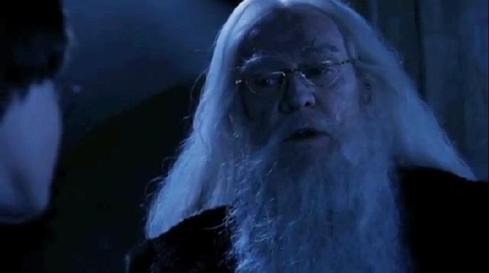
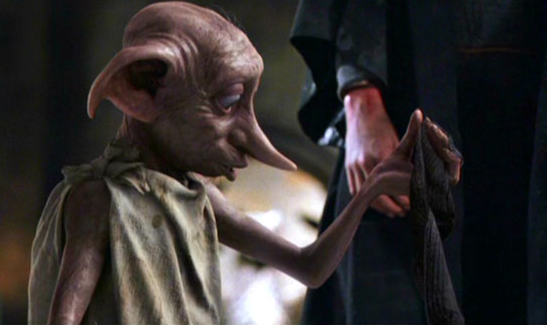

<!DOCTYPE html>
<html>
    <head>
        <meta charset="utf-8">
        <title>PotterScience</title>
        <meta name="description" content="PotterScience">
        <link rel="stylesheet" href="styles.css">
        <link rel="icon" href="star-white.jpg">
    </head>
   
</html>

<body>
    <div class="topnav">
        <a href="index.html"><br>Home</a>
        <a href="facts.html"><br>Facts</a>
        <a href="RantRoom.html"><br>RantRoom</a>
        <a class="active" href="Hogsmeade.html"></a>
      </div>

      <h1 class="Heading1" style="font-size:45px; color: rgb(112, 8, 22);">The Greatest Wizard of All Time</h1>
      <P class="pa" style="text-align: center;">Did you know his most powerful sayings?</P>
      <p class="pb">Albus Percival Wulfric Brian Dumbledore, or more known as Professor Dumbledore is the Headmaster
          of Hogwarts School of Witchcraft and Wizardry. In the books, Dumbledore is more known as a lovely and soft man,
          he was about 150 years old when he first met Harry at school. Dumbledore is one of the people Harry trusted, because he always
          helps Harry anytime Harry needed him. He was then also known as Tom Riddle's former favourite teacher.
          Because of his invincible skills, Dumbledore was targeted by the Minister of Magic as the main threat behind the rising of You-Know-Who.
          Though, not how the books characterized him, actor Michael Gambon portrayed Prof. Dumbledore through the script instead of the books.
          Michael Gambon made Dumbledore to a strong personality and a fierce legendary wizard instead of a soft Dumbledore we knew from the books. Well, no one is perfect- the same goes for Dumbledore.
          Dumbledore may also be known for his flaws, but he had given us a lot of wise words to keep.
          And later on the series, this great wizard was then Avada-Kedavrad in the Harry Potter and the Half-blood Prince series.
          Now, here are some of Dumbledore The Great's great sayings;
          
      </p>
  
  <div>
      
      <h4 class="gryff">
  1. “It does not do to dwell on dreams and forget to live.”
      </h4>
      <br>
      <p class="pc">This line appeared in Harry Potter and the Sorcerer's Stone.
        Mates, Dumbledore had experienced live in 150 years more or less, so of course he is mostly wise.
      </p><br><Br>

     <h4 class="gryff">
2. “The truth. It is a beautiful and terrible thing, and should therefore be treated with caution.” 
     </h4>
    <p class="pc">This line also came out in Harry Potter and the Sorcerer's Stone.
     Dumbledore is too wise that even he has billions quotes even in the first book and movie. He was a good Professor, with a Merlin's beard style.
     Everyword Albus Dumbledore spoke is his quote of the very second, and so on.
    </p><br><Br>


    <h4 class="gryff">
        3. “One can never have enough socks.” 
             </h4>
        
        <p class="pc">
            This sentence of his was a massive help for Dobby the now free Elf. Albus Dumbledore always chose his words wisely. He had a big vision, and great thoughts.
        </p><br><Br>

            <h4 class="gryff">
                4. “It is our choices, Harry, that show what we truly are, far more than our abilities.”
                     </h4>
                
                <p class="pc">
                    Professor Dumbledore claimed this saying in The Chamber of Secrets. He was always giving support to Harry, and his words are literatedly perfect.
                    Dumbledore was a man who people can always put faith on, although he was not really what we think of very wisely in the "Always" quote from Severus Snape, but Dumbledore played his exquisite role.
                </p><br><Br> 
     </div>


  <br>
  <br><br><BR><BR><BR><BR><BR><BR><BR><BR><BR><br>
  <footer class="footer">
    <p>Contact us; 
    <a href="mailto:jahypotenuse@gmail.com">jahypotenuse@gmail.com</a>&
    <a href="mailto:gillparker321@gmail.com">gillparker321@gmail.com</a></p>
  </footer> 

</body>